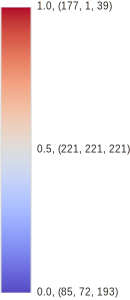

This page provides advice for using colors in scientific visualization. More specifically, this page provides color maps that you can use while using pseudocoloring of a scalar field. The color maps are organized by how and where they are best used. Each color map shows some example usage and provides color tables in CSV format so that they can readily be used in rendering system textures or entered into visualization software. For simplicity, the color tables are provided in many different lengths and with colors expressed in both bytes (integers between 0 and 255) and floats (decimals between 0.0 and 1.0). Each color map also has instructions on getting these colors in the ParaView visualization application. Where applicable, IPython notebooks containing details about how each color map is generated. You can either run the code directly with the appropriate software or copy/paste scripts into your own interpreter.
This work originates from the paper "Why We Use Bad Color Maps and What You Can Do About It." Details about this paper are given below. Another related publication is "Diverging Color Maps for Scientific Visualization," which describes specifics about one particular type of color map. Details of this paper and the techniques used can be found on its companion page.
Color Maps
3D Surfaces
In general a color map should use changes in luminance (brightness) to communicate changes in value. However, in a 3D sceen, shading cues, which are themselves changes in brightness, are vital to understanding shapes. Thus, you have to avoid having the brightness changes in the color map interfear with the brightness changes in shading and vice versa. You achieve this by limiting the color map to reasonably bright colors. Because this reduces the total range of brightness in the color map, I find it most effective to use a diverging (double-ended) color map.
Smooth Cool Warm
This color map uses the techniques based on "Diverging Color Maps for Scientific Visualization" by Kenneth Moreland. It is a diverging (double-ended) color map with a smooth transition in the middle to prevent artifacts at the midpoint. There are several more color maps of a similar nature described here.
 

Color Tables (byte): 8 16 32 64 128 256 512 1024
Color Tables (float): 8 16 32 64 128 256 512 1024
Download all color tables.
This color map is available in ParaView as the "Cool to Warm" preset.
Python code to generate these colors.
Bent Cool Warm
This is a similar color map to the previous except that the luminance is interpolated linearly with a sharp bend in the middle. This makes for less washed out colors in the middle, but also creates an artifact at the midpoint.


Color Tables (byte): 8 16 32 64 128 256 512 1024
Color Tables (float): 8 16 32 64 128 256 512 1024
Download all color tables.
Download ParaView color map file.
Python code to generate these colors.
2D Images
When pseudocoloring is applied to the flat surface of the image, you do not have to contend with 3D shading. In this case, you are free to use the entire range of brightness from completely dark to full white. These color maps take advantage of that extra range.
Black Body
The black body color map is based on colors from black-body radiation. The colors are are not exact to those of black-body radiation but are designed to have a constant increase in brightness throughout.
The black body color map based on the colors of black body radiation. Although the colors are inspired by the wavelengths of light from black body radiation, the actual colors used are designed to be perceptually uniform. Colors of the desired brightness and hue are chosen, and then the colors are adjusted such that the luminance is perceptually linear (according to the CIELAB color space).


Color Tables (byte): 8 16 32 64 128 256 512 1024
Color Tables (float): 8 16 32 64 128 256 512 1024
Download all color tables.
Download ParaView color map file.
Python code to generate these colors.
Extended Black Body
The extended black body color map uses the colors from black body but also adds some blue and purple hues for a more colorful and perhaps more appealing display. The colors are designed to have a constant increase in brightness throughout.


Color Tables (byte): 8 16 32 64 128 256 512 1024
Color Tables (float): 8 16 32 64 128 256 512 1024
Download all color tables.
Download ParaView color map file.
Python code to generate these colors.
Kindlmann
The Kindlmann color map uses the colors first proposed in a paper by Kindlmann, Reinhard, and Creem. The map is basically the rainbow color map with the luminance adjusted such that it monotonically changes, making it much more perceptually viable.


Color Tables (byte): 8 16 32 64 128 256 512 1024
Color Tables (float): 8 16 32 64 128 256 512 1024
Download all color tables.
Download ParaView color map file.
Python code to generate these colors.
Extended Kindlmann
The extended Kindlmann color map uses the colors from Kindlmann but also adds more hues by doing a more than 360 degree loop around the hues. This works because the endpoints have low saturation and very different brightness.


Color Tables (byte): 8 16 32 64 128 256 512 1024
Color Tables (float): 8 16 32 64 128 256 512 1024
Download all color tables.
Download ParaView color map file.
Python code to generate these colors.
Other Resources
Color Brewer
The web-based Color Brewer tool, available at http://colorbrewer2.org/, is an excellent resource for choosing a collection of tools for a variety of uses.
Los Alamos Data Science Color Map Collection
The data science team at Los Alamos National Laboratory have posted a collection of color maps they have designed at https://datascience.lanl.gov/colormaps.html.
Publication
"Why We Use Bad Color Maps and What You Can Do About It." Kenneth Moreland. In Proceedings of Human Vision and Electronic Imaging (HVEI), 2016. (To appear)
Abstract
We know the rainbow color map is terrible, and it is emphatically reviled by the visualization community, yet its use continues to persist. Why do we continue to use a this perceptual encoding with so many known flaws? Instead of focusing on why we should not use rainbow colors, this position statement explores the rational for why we do pick these colors despite their flaws. Often the decision is influenced by a lack of knowledge, but even experts that know better sometimes choose poorly. A larger issue is the expedience that we have inadvertently made the rainbow color map become. Knowing why the rainbow color map is used will help us move away from it. Education is good, but clearly not sufficient. We gain traction by making sensible color alternatives more convenient. It is not feasible to force a color map on users. Our goal is to supplant the rainbow color map as a common standard, and we will find that even those wedded to it will migrate away.
Full Paper
Why We Use Bad Color Maps and What You Can Do About It
- "Diverging Color Maps for Scientific Visualization." Kenneth Moreland. In Proceedings of the 5th International Symposium on Visual Computing, December 2009. DOI 10.1007/978-3-642-10520-3_9.
- Introduces the smooth diverging color maps.
- "Face-Based Luminance Matching for Perceptual Colormap Generation." Gordon Kindlmann, Erik Reinhard, and Sarah Creem. In Proceedings of IEEE Visualization, pages 299–306, October 2002. DOI 10.1109/VISUAL.2002.1183788.
- Originally proposed what we call the Kindlmann color map.
- "The Rainbow is Dead... Long Live the Rainbow! - Perceptual Palettes, Part 5 - CIE LAB Linear L* Rainbow." Matteo Niccoli. MyCarta (blog post), December 2012. https://mycarta.wordpress.com/2012/12/06/the-rainbow-is-deadlong-live-the-rainbow-part-5-cie-lab-linear-l-rainbow/.
- Proposes adjusting using luminance in CIELAB space rather than human input to build the Kindlmann color map. I used the same technique to build the color map posted on this page.
- "A Colour Scheme for the Display of Astronomical Intensity Images." D. A. Green. Bulletin of the Astronomical Society of India, 39:289–295, 2011. arXiv:1108.5083.
- A proposed color map technique that creates a color spiral of monotonic luminance. Similar concepts were used in the Extended Kindlmann color map presented here although the techniques used are different.